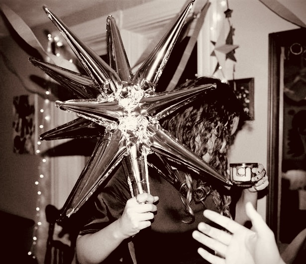

What I'm up to.
Packing up and downsizing for my upcoming travels! I'm not making much new stuff in the studio, I hate to leave anything unfinished, so I'm focused on wrapping up old projects and a bit of planning for the summer ahead.
Some thoughts on my lines.
I love that feeling when I notice a great view, being in awe of it's grandness, struck by a kind of perfection that outshines what any man or machine can mimic. Still it delights me to try, and I know I have that in common with a long line of human tradition. From the painters of the Chauvet cave, to the Nazca people, all the way to Alexei Leonov and his orbital sunrise, we're all just staring out in wonder trying to hold on to it all. This style makes me feel connected to all that. I'm at peace stewing in my memories of views I've taken in myself, or visited through someone else's art, and those I've only imagined. Painting these lines is a kind of record of that train of thought, translating something lofty into the comforting constraint of an algorithm of line work.
When I first created this design I was somewhat fresh out of university and transitioning to write code using AI. It was a time where I was deeply curious and excited about the leaps in progress, yet yearning for the simpler days in school, where I first learned to love programming through assembly language.
I find unglazed clay much more pleasant to hold. I love the texture, and softness of the heat which radiates while I hold the rough clay. In a way I was just seeking to expose more of it, with a decorative excuse. The process of painting wax drew me in the because of how meticulous it is. If I try to rush and load up my brush with wax I risk adding a drip, or accidental drag, which for these pieces would mean a costly re-firing.